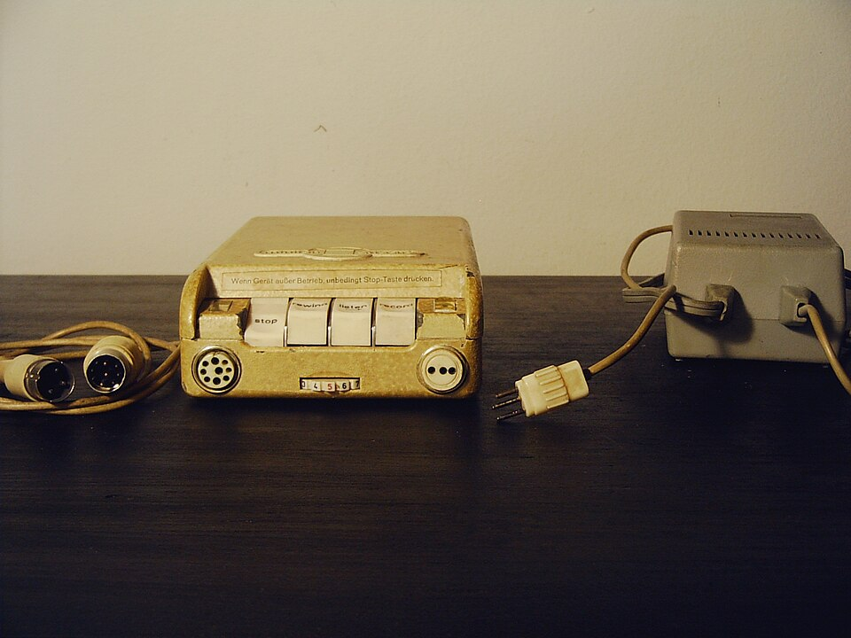

blandinejoannic
blandinejoannic
Good morning!
Nur das Schöne wird die Welt retten!
Fjodor Dostojewski
Nicht verzagen, Doc Alvers fragen!
Informatik — Grundkurs 11
Recherche im Projekt
Teilfragen, Interview und Umfrage, Exzerpieren, Quellen verwalten
Nicht verzagen, Doc Alvers fragen!
Kapitel 01
Von der Leitfrage zur Suche
Teilfragen, Suchbegriffe, Protokoll
Nicht verzagen, Doc Alvers fragen!
Wo wir stehen
Letzte Woche: Thema gewählt, Leitfrage formuliert, Meilensteine und Zuständigkeiten festgelegt
Heute beginnt die Recherche — mit den Methoden aus Lernbereich 2
Suchen, Quellen bewerten, zitieren: Das kennt ihr schon — jetzt im Team und für eure Frage
Leitfrage der Stunde: Wie wird aus einer Leitfrage geordnetes, belegtes Material?
Nicht verzagen, Doc Alvers fragen!
Der Fahrplan des Projekts
| Ustd. | Phase | Ergebnis der Phase |
|---|---|---|
| 1–2 | Themenwahl und Planung | Leitfrage, Projektskizze, Meilensteine |
| 3–4 | Recherche | geordnetes, belegtes Material |
| 5–6 | Erarbeitung I | Gliederung und Rohfassung |
| 7–8 | Erarbeitung II | geprüfte Endfassung |
| 9–10 | Präsentation ausarbeiten | Foliensatz und Generalprobe |
| 11–12 | Präsentationen I | erste Vorträge, Portfolio-Abgabe |
| 13–14 | Präsentationen II und Auswertung | Bewertung und Reflexion |
Grün: geschafft — Orange: heute
Nicht verzagen, Doc Alvers fragen!
Erst zerlegen, dann suchen
Die Recherche beginnt nicht mit der Suchmaschine, sondern mit Teilfragen
Teilfragen liefern die Suchbegriffe — sonst sucht man nach dem Thema statt nach der Antwort
Beispiel: Wie verändert die automatische Notenerfassung die Arbeit im Sekretariat?
Teilfragen: Wie lief es vorher? Was macht das System? Was sagen die Beteiligten?
Die Quellenliste entsteht während der Recherche, nicht davor
Nicht verzagen, Doc Alvers fragen!
Zwei Suchstrategien
Suchbegriffe variieren
Fachbereiche nutzen verschiedene Wörter für dasselbe
Datenpanne, Datenschutzverletzung, Data Breach
jeder Begriff öffnet ein anderes Fenster
die englische Form lohnt fast immer
Schneeballsystem
im Literaturverzeichnis einer guten Quelle weitere Quellen finden
rückwärts: ältere Arbeiten
vorwärts: neuere Arbeiten
oft schneller als jede Suchmaschine
Nicht verzagen, Doc Alvers fragen!
Das Rechercheprotokoll
| Wo gesucht | mit welchen Begriffen | was dabei herauskam |
|---|---|---|
| Suchmaschine | Notenerfassung Schule Sekretariat | viel Werbung, zwei brauchbare Berichte |
| Bibliothekskatalog | Schulverwaltung Digitalisierung | ein Buch, Kapitel 3 passt |
| Verzeichnis von Quelle 2 | Schneeball rückwärts | drei ältere Studien |
| Suchmaschine | school administration software | ein englischer Überblick |
Das Protokoll verhindert doppelte Suchen und zeigt, welche Wege noch offen sind
Der Browserverlauf ist kein Protokoll: Er zeigt Klicks, nicht die Strategie
Nicht verzagen, Doc Alvers fragen!
Kapitel 02
Selbst erheben
Interview und Umfrage

Nicht verzagen, Doc Alvers fragen!
Wann ein Interview lohnt
Fakten stehen meist schon irgendwo — Erfahrung und Einschätzung oft nicht
Ein Experteninterview lohnt, wenn die Frage genau danach verlangt
Es ersetzt keine Literaturrecherche
Vorbereitung: ein Leitfaden mit offenen Fragen
Aufzeichnen nur mit ausdrücklicher Zustimmung — das vorher klären
Nicht verzagen, Doc Alvers fragen!
Offene gegen geschlossene Fragen
| Frage im Interview | Art | was sie bringt |
|---|---|---|
| Finden Sie das neue System gut? | Ja-Nein | beendet das Gespräch |
| Ist das neue System besser als das alte? | Ja-Nein | lädt nur zum Bestätigen ein |
| Nutzen Sie das neue System täglich? | Ja-Nein | eine Zahl — die geht auch anders |
| Wie hat sich Ihre Arbeit durch das System verändert? | offen | lädt zum Erzählen ein |
Offene Fragen bringen mehr als geschlossene
Wer nur Bestätigung sucht, forscht nicht
Nicht verzagen, Doc Alvers fragen!
Umfrage in der Schule
Datenschutz
Teilnahme ist freiwillig
den Zweck vorher angeben
möglichst anonym erheben
ohne Namen entsteht gar kein Personenbezug
Kleine Stichprobe
bei zehn Befragten ist eine Person zehn Prozent
einzelne Antworten verschieben das Ergebnis stark
Prozente täuschen Genauigkeit vor
besser absolute Zahlen: 7 von 10
Nicht verzagen, Doc Alvers fragen!
Kapitel 03
Material sichern
Exzerpieren, belegen, Quellen verwalten
Nicht verzagen, Doc Alvers fragen!
Exzerpieren ohne Plagiat
Beim Lesen sofort festhalten: Was ist Zitat, was ist eigene Zusammenfassung?
Später lässt sich die Grenze nicht mehr rekonstruieren
Genau so entstehen unbeabsichtigte Plagiate
Die Quellenangabe gehört gleich dazu — nicht erst am Ende nachtragen
Nicht verzagen, Doc Alvers fragen!
Eine Quellenliste für alle
So nicht
Lesezeichen im eigenen Browser — auf einem Gerät gefangen
in den Verläufen der Gruppenmitglieder
am Ende aus dem Gedächtnis
So schon
eine gemeinsame Liste
mit vollständigen Angaben
von Anfang an
alle sehen dieselbe Fassung
Nicht verzagen, Doc Alvers fragen!
Besondere Quellen
| Quelle | was dazugehört |
|---|---|
| Video | Titel, Kanal, Datum und die Zeitmarke der zitierten Stelle |
| graue Quelle | nicht über den Buchhandel veröffentlicht, etwa ein Behördenbericht |
| zitierfähig, aber schwer wiederzufinden: Archivlink oder Kopie dazu | |
| Interview | wer, wann und wie befragt wurde; der Leitfaden kommt in den Anhang |
Videos sind zitierfähig wie andere Quellen — nur der Link genügt nicht
Nicht verzagen, Doc Alvers fragen!
KI-Werkzeuge in der Recherche
Sprachmodelle erzeugen plausibel klingende, aber erfundene Angaben
Auch ihre Quellenangaben können erfunden sein
Deshalb: das Ergebnis nur als Ausgangspunkt nehmen
Jede Angabe an einer echten Quelle prüfen
Der Einsatz gehört offen in die Arbeit
Nicht verzagen, Doc Alvers fragen!
Belegen und wann genug ist
Belegen
ein Beleg stützt eine Aussage, ein Beweis schließt das Gegenteil aus
in empirischen Fragen selten Beweise: vorsichtig formulieren
widersprechende Quellen aufnehmen und offen behandeln
Weglassen ist ein wissenschaftlicher Fehler
Genug ist es ...
wenn neue Suchen überwiegend Bekanntes liefern: Sättigung
feste Zahlen sind willkürlich, die Zeit ist kein Kriterium
Leitfrage nicht beantwortbar? Begründet anpassen und festhalten
eine Quelle zu erfinden ist Täuschung
Nicht verzagen, Doc Alvers fragen!
Recherche heißt: die Leitfrage in Teilfragen zerlegen, gezielt suchen und protokollieren, sofort sauber exzerpieren — am Ende steht geordnetes, belegtes Material.
Merksatz
Nicht verzagen, Doc Alvers fragen!
Fun Facts
„Plagiat“ kommt vom lateinischen plagiarius, Menschenräuber — so beschimpfte der Dichter Martial einen, der seine Verse als eigene vortrug
In der englischen Wikipedia steht hinter unbelegten Sätzen [citation needed] — der Hinweis ist längst ein Internet-Witz
Den Begriff Sättigung prägten die Soziologen Barney Glaser und Anselm Strauss 1967 für die qualitative Forschung
Das Minifon auf der Kapitelseite war ein Diktiergerät für die Manteltasche — heute nimmt jedes Smartphone besser auf
Nicht verzagen, Doc Alvers fragen!
Checkliste Recherche
Die Teilfragen stehen, jede hat eine zuständige Person
Jede Person führt ein Rechercheprotokoll
Die gemeinsame Quellenliste hat vollständige Angaben
Zitat und eigene Zusammenfassung sind sauber getrennt
Interview oder Umfrage? Leitfaden und Zustimmung sind geklärt
Nicht verzagen, Doc Alvers fragen!
Eure Aufgabe
Teilfragen aus eurer Leitfrage ableiten und im Team verteilen
Arbeitsteilig recherchieren: Quellen sammeln, bewerten wie in Lernbereich 2, ins Protokoll
Beratung: Ich komme zu jeder Gruppe — zeigt mir Teilfragen, Protokoll und Quellenliste
Zwischenstand ins Portfolio: Teilfragen, Protokoll, Quellenliste
Zum Schluss: Aufgaben (20) auf der Planseite — Lösung pro Aufgabe zum Aufklappen
Nicht verzagen, Doc Alvers fragen!